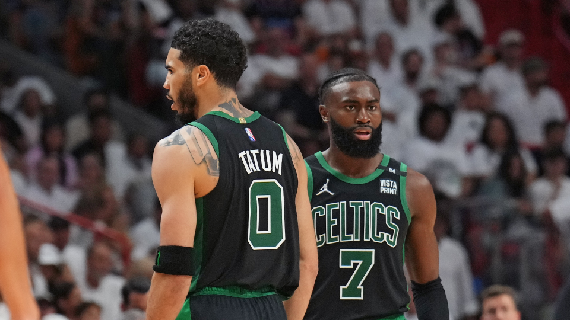

Astro faz 31 pontos no jogo 4 depois de anotar 10 no jogo 3; Miami erra primeiros 14 arremessos e fica para trás já no primeiro quarto
Na noite desta segunda-feira, em Boston, o time atropelou o Miami Heat por 29 a 11 já no primeiro quarto. Venceu por 102 a 82 e empatou a final da Conferência Leste em 2 a 2. Jayson Tatum, que havia marcado 10 pontos no jogo 3, respondeu com 31.
O Heat, que não contou com Tyler Herro, com dores na virilha, errou seus primeiros 14 arremessos no jogo. Os 11 pontos anotados foram a pior marca da história da franquia em um período nos playoffs. Foi o suficiente para os Celtics abrirem 22 pontos, diferença que chegou a 32 no terceiro quarto. Ambos os técnicos, então, deram descanso para seus principais jogadores, já com foco no jogo 5, quarta-feira, às 21h30, em Miami.
Ultimas Noticias